3. Edit Distance
Three-way choices over two string positions
A suffix pair offers insertion, deletion, or a diagonal match/substitution. The table evaluates all suffix pairs in dependency order.
- State
- , positions in the two strings
- Goal
- Minimize the number of edits that transform one string into the other.
- Base cases
- When either suffix is exhausted, return the length of the other suffix.
Diagram legend: dotted = pending; blue = active call; orange = latest return; purple = cache/base; gold = minimum-cost choice.
On this page
- Problem overview and examples
- Plain recursive code; memoized-DAG projection
- Step 0001 of 2042
- Step 0002 of 2042
- Step 0003 of 2042
- Step 0004 of 2042
- Step 0005 of 2042
- Step 0006 of 2042
- Step 0007 of 2042
- Step 0008 of 2042
- Step 0009 of 2042
- Step 0010 of 2042
- Step 0011 of 2042
- Step 0012 of 2042
- Step 0012 cache hit Step 0014
- Step 0014 of 2042
- Step 0015 of 2042
- Step 0016 of 2042
- Step 0017 of 2042
- Step 0018 of 2042
- Step 0074 of 2042
- Step 0189 of 2042
- Step 0387 of 2042
- Step 1349 of 2042
- Step 2042 of 2042
- Minimum-cost choice at every interior state
- Bottom-up code
- Initialization: separated base row and base column
- Cell update 1 of 20: (4,3) = E/E
- Cell update 2 of 20: (3,3) = I/E
- Cell update 3 of 20: (2,3) = V/E
- Finish column j=3:E
- Column j=2:V completed as one group
- Column j=1:O completed as one group
- Lower four cells of column j=0:L
- Cell update 20 of 20: (0,0) = M/L
- Completed edit-distance table and local policy
Problem overview and examples
Problem. Find the minimum number of single-character insertions, deletions, and substitutions needed to transform one string into another.
Example 1 (used below). Input: MOVIE LOVE. Output: (substitute M with L, then delete I).
Example 2. Input: CAT CUT. Output: .
Plain recursive code; memoized-DAG projection
Each interior state evaluates diagonal, delete, and insert. State compares the suffixes SOURCE[i:] and TARGET[j:].
SOURCE = "MOVIE"
TARGET = "LOVE"
M, N = len(SOURCE), len(TARGET)
def edit_distance(i, j):
if i >= M:
return N - j
if j >= N:
return M - i
cost = 0 if SOURCE[i] == TARGET[j] else 1
diagonal = cost + edit_distance(i + 1, j + 1)
delete = 1 + edit_distance(i + 1, j)
insert = 1 + edit_distance(i, j + 1)
return min(diagonal, delete, insert)
print(edit_distance(0, 0)) # 2The naive recursion makes 1,021 calls (2,042 call/return events). The figures merge identical states and show selected milestones.
Step 0001 of 2042
Call root state (0,0)
Step 0002 of 2042
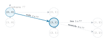
Substitute calls state (1,1)
Step 0003 of 2042
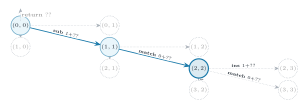
Match calls state (2,2)
Step 0004 of 2042
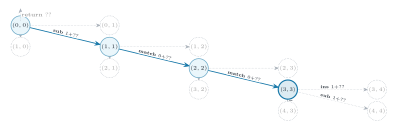
Match calls state (3,3)
Step 0005 of 2042
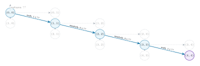
Substitute calls state (4,4)
Step 0006 of 2042
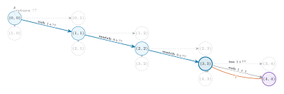
Return 1 from state (4,4)
Step 0007 of 2042
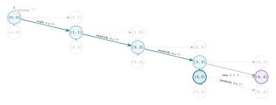
Delete calls state (4,3)
Step 0008 of 2042
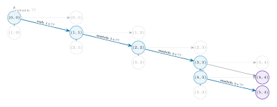
Match calls state (5,4)
Step 0009 of 2042
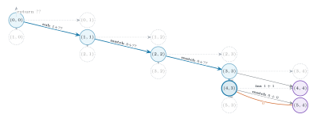
Return 0 from state (5,4)
Step 0010 of 2042
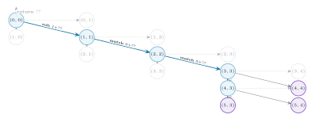
Delete calls state (5,3)
Step 0011 of 2042
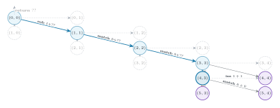
Return 1 from state (5,3)
Step 0012 of 2042
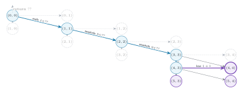
Cache hit: insert reaches existing state (4,4)
Step 0012 cache hit Step 0014
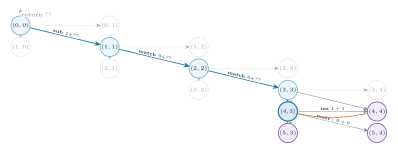
Return 1 to (4,3); naive Step 13 omitted.
Step 0014 of 2042
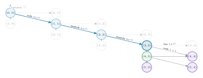
Return 0 from state (4,3)
Step 0015 of 2042
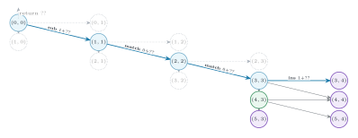
Insert calls state (3,4)
Step 0016 of 2042
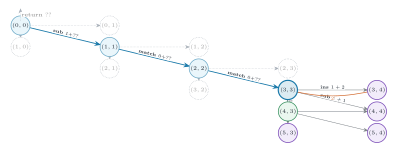
Return 2 from state (3,4)
Step 0017 of 2042
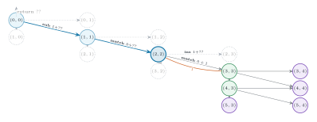
Return 1 from state (3,3)
Step 0018 of 2042
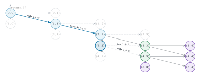
Delete calls state (3,2)
Step 0074 of 2042
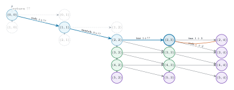
Return 3 from state (2,4)
Step 0189 of 2042
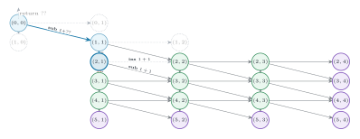
Return 2 from state (3,1)
Step 0387 of 2042
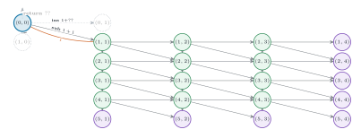
Return 1 from state (1,1)
Step 1349 of 2042
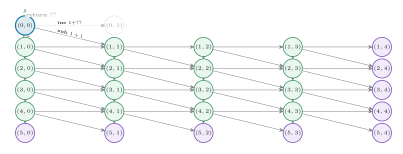
Return 2 from state (1,0)
Step 2042 of 2042
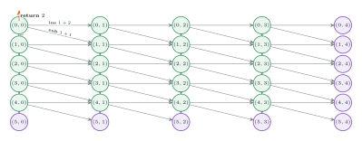
Return 2 from state (0,0)
Minimum-cost choice at every interior state
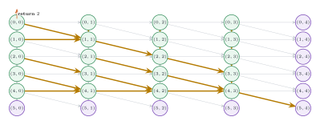
Gold edge = diagonal, delete, or insert selected by min(); ties prefer the diagonal, then delete, then insert.
Bottom-up code
The loop order is a topological order of the same state DAG.
SOURCE = "MOVIE"
TARGET = "LOVE"
M, N = len(SOURCE), len(TARGET)
dp = [[0] * (N + 1) for _ in range(M + 1)]
# Separated base row and base column.
for j in range(N, -1, -1):
dp[M][j] = N - j
for i in range(M, -1, -1):
dp[i][N] = M - i
# Columns right to left; cells bottom to top.
for j in range(N - 1, -1, -1):
for i in range(M - 1, -1, -1):
cost = 0 if SOURCE[i] == TARGET[j] else 1
diagonal = cost + dp[i + 1][j + 1]
delete = 1 + dp[i + 1][j]
insert = 1 + dp[i][j + 1]
dp[i][j] = min(diagonal, delete, insert)
print(dp[0][0]) # 2Initialization: separated base row and base column
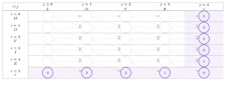
Bottom row inserts the remaining target letters; right column deletes the remaining source letters. Base states have no choices.
Cell update 1 of 20: (4,3) = E/E
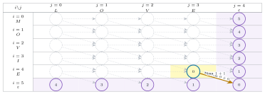
; choose match.
Cell update 2 of 20: (3,3) = I/E
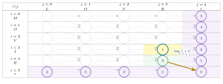
; choose delete.
Cell update 3 of 20: (2,3) = V/E
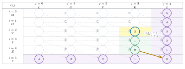
; choose delete.
Finish column j=3:E
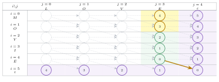
The remaining two cells use the same three-way backup; column E is complete.
Column j=2:V completed as one group
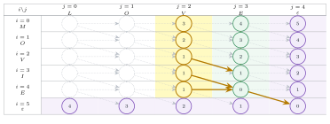
Five bottom-to-top updates complete the V suffix column.
Column j=1:O completed as one group
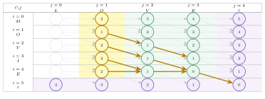
Five bottom-to-top updates complete the OVE suffix column.
Lower four cells of column j=0:L
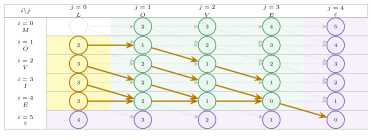
The final column is complete except for the root state (0,0).
Cell update 20 of 20: (0,0) = M/L
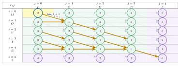
; choose substitute.
Completed edit-distance table and local policy
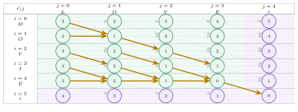
All 30 states are final. Gold edges show the locally preferred edit; .